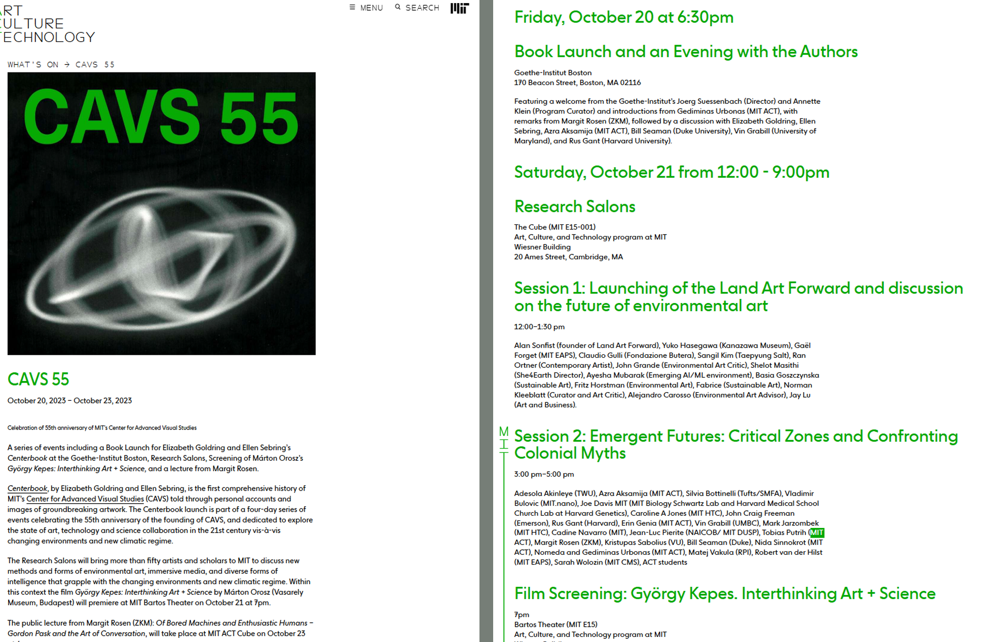

Role of Typography in User Experience
How typography affects web experience...
Typography is one of the most powerful tools in digital design, shaping not only how content looks but how it is read, understood, and experienced. Through hierarchy, spacing, and font choice, typography guides users through information, establishes brand personality, and influences emotional response.
Well-designed typography creates clarity, rhythm, and ease — allowing users to scan naturally and engage without effort. Poor typography, on the other hand, introduces friction through cluttered layouts, weak contrast, and confusing structure, forcing users to work harder to process content.
In web design, successful typography is not decoration; it is functional communication that balances beauty with usability.
Brunello Cucinelli's site uses typography as a design tool to create elegance, clarity, and effortless navigation. It respects hierarchy, spacing, and readability — key principles of good web design.
The CAVS site, while visually expressive, ignores many of these principles. Its aggressive color choices, crowded text, and lack of structure reduce accessibility and user comfort.
Brunello Cucinelli

The website of Brunello Cucinelli embodies the principles of quiet luxury through its typographic restraint. Every element feels intentional — from the generous white space to the subtle hierarchy of headlines and product details.
Rather than overwhelming the user, the typography gently guides the eye. Line spacing is airy, font weights are refined, and contrast is controlled, creating an experience that feels calm, sophisticated, and effortless. The type becomes an extension of the brand's craftsmanship — understated yet powerful — allowing the product to remain the focal point.
Here, typography does not seek attention. It earns trust.
MIT Center for Advanced Visual Studies (CAVS)

By contrast, the website for CAVS demonstrates how aggressive typographic choices can disrupt usability. Bright neon green text headings dominate the screen... creating visual tension rather than flow.
Hierarchy is unclear, with headlines and body copy competing instead of complementing one another. Long blocks of dense text lack breathing room, making content feel heavy and difficult to navigate. Rather than guiding the reader, the typography overwhelms them. What could be engaging becomes exhausting.
These two websites clearly demonstrate how powerful — and how damaging — typographic decisions can be in web design.